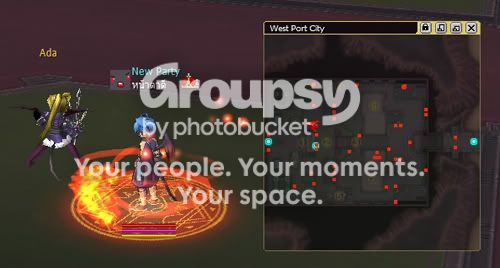
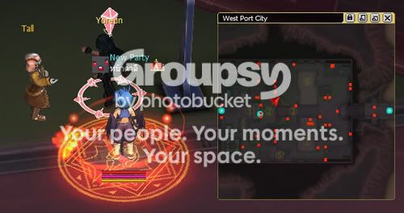
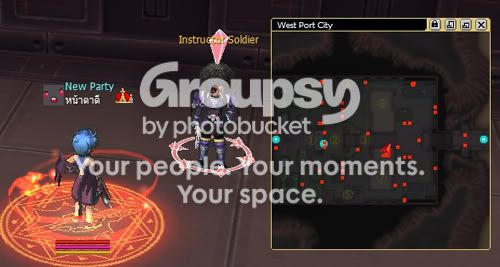
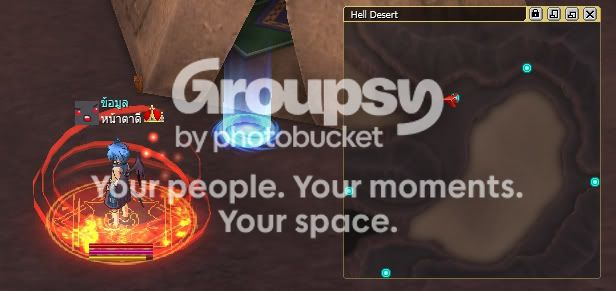
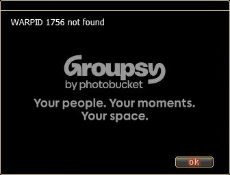
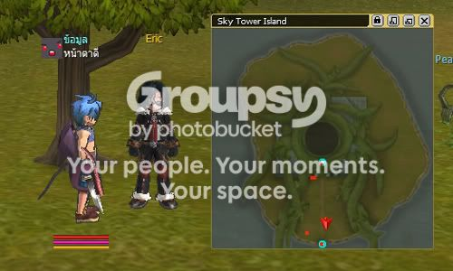
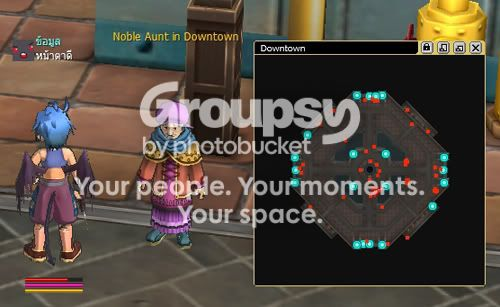
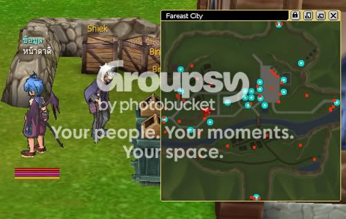

http://board.onenet.co.th/viewtopic.php?t=72275
เควสนี้จะเป็นเนื้อเรื่องที่ต่อจากเนื้อเรื่องของ Berial กับดินแดน Dominion ใน Saga 8 นะครับ
เนื้อเรื่องนี้จะแยกกันขึ้นอยู่กับว่าเราเลือกที่จะตามใครในเนื้อเรื่องช่วง Saga 8
เนื้อเรื่อง Berial [รักษาการที่ West Port]
ให้เราเดินทางไปที่เมือง West Port โดยให้เราเข้าไปใน Registance Head Office

คุยกับ NPC : Berial
หมายเหตุ : ถ้าเราเลือก สิงร่าง [Berial] แล้วเราก็จะได้เล่นเป็น Berial ชั่วคราว(สิงหรือถูกสิงไม่ได้) ถ้าเราให้ Berial สิงเรา เราก็จะปกติ..
ประกาศบัค : เควสนี้ติดบัคอยู่แนะนำให้ Berial สิงเราจะดีกว่า

มาที่ภายในเมือง West Port คุยกับ NPC : Ada

คุยกับ NPC : Yoreun และ NPC : Tall

คุยกับ NPC : Instructor Soldier

คุยกับ NPC : West Port Guard

หลังจากนั้นให้เราไปที่ Hell Desert แล้วเข้าไปใน Tent

คุยกับ NPC : Resistance Spy (มันนอนตายอยู่หรือป่าววะนั่น....)

เดินทางไป Warship Island คุยกับ NPC : Resistance (คุย 2 รอบนะ)

กลับมาที่เมือง West Port เข้าไปใน Registance Head Office อีกครั้ง
เพื่อรายงานผลให้กับ NPC : Resistance Leader แล้วเราก็จะสิงร่าง Berial อีกครั้ง
(แล้วจะให้เราออกจากร่างแล้วสิงใหม่ทำไมอีกรอบเนี่ย...)
ให้เราไปที่ Warship Island[Night] เพื่อคุยกับ NPC : Darkness Soul

กลับไปเมือง West Port เข้าไปใน Registance Head Office (อีกแล้ววววว)
เพื่อคุยกับ NPC : Resistance Leader อีกครั้ง
แล้วเราจะได้รับ Registance Radio(Event)

(แล้วก็สิงตา Berial ใหม่อีกแล้ว เพื่อไรฟร้าาาาา.....)
ให้เราไปคุยกับ Instructor Soldier
แล้วไปที่ Hell Desert แล้วเข้าไปใน Tent เพื่อคุยกับ Resistance Spy
ต่อจากนั้นให้เราไปที่ South Acronia Field ใน Dominion เพื่อ.....เจอกับบัค


GM คร้าบแก้ไวๆคร้าบ ตัวละครผมสิงใครไม่ได้เลยยยยยยยยยยยยยย
ไว้บัคแก้แล้วจะทำต่อให้
เนื้อเรื่อง Emil และ Ruruie [ตามหา Titas]
รูปจะลงให้ทีหลัง
เริ่มเควสที่เมือง West Port โดยให้เราเข้าไปใน Registance Head Office เพื่อคุยกับ NPC : Supply Group
ออกมาข้างนอก คุยกับ NPC : Dr.Einstein
เขาจะขอให้เราช่วย Emil แล้วเราก็จะโดนส่งตัวไปหา Emil ในห้องๆหนึ่ง

ให้เราจัดการกับ Dimension Crawler ให้หมด อย่าให้ต้นเห็ดเป็นอะไร
เมื่อเสร็จแล้วให้คุยกับ Emil แล้วจะถูกส่งตัวออกมา
ให้เราคุยกับ NPC : Dr.Einstein อีกครั้ง
ต่อจากนั้นให้เราไปใน Registance Head Office เพื่อคุยกับ NPC : Supply Group อีกครั้ง
ให้เรามาที่ ECO Town เพื่อมาคุยกับ NPC : Marshall (ชื่อชั่วคราว)
ตำแหน่งดังรูปข้างล่าง
เซิฟยุ่น

เซิฟไทย

ทีมงานคร้าบบบบบบบบบเอาอิตานี่มาเข้าเซิฟไทยหน่อยยยยยยยยยย
แก้บัคแล้วจะทำข้อมูลต่อให้
เนื้อเรื่อง Masha [ขอความช่วยเหลือจากสมาคมพ่อค้าใน Uptown]
รูปจะลงให้ทีหลัง
เริ่มเควสที่เมือง West Port โดยให้เราเข้าไปใน Registance Head Office เพื่อคุยกับ NPC : Masha
แล้วให้ไปที่ Sky Tower Island (ฝั่งดินแดน Emil) เพื่อคุยกับ NPC : Eric แล้วเลือกไป Acronia

มาที่ Downtown เพื่อคุยกับ NPC : Noble Aunt in Dowtown เลืแกไป South Iron City

เดินทางไป Iron South City เข้าไปใน Merchenary Chief Room จะพบกับเหตุการณ์ในนั้น โดย Masha จะขอเงินเรา 1 G

ต่อมาก็ไปที่ Fareast City เพื่อคุยกับ NPC : Shiek

แล้วก็ไปที่ Tonka City เข้าไปใน Tonka Department คุยกับ Tonka Sheik ก็จะพบกับเหตุการณ์ขึ้น
กลับไปยังเมือง West Port เข้าไปใน Registance Head Office เพื่อคุยกับ NPC : Masha
ตรงนี้ยังผ่านไม่ได้ ใครรู้ก็แจ้งทีนะครับ


 นึกว่าทำเสร็จแล้วจะคืนร่างเดิมได้ ดันเป็นบัค
นึกว่าทำเสร็จแล้วจะคืนร่างเดิมได้ ดันเป็นบัค